徒步龙脊梯田丨骑行阳朔 团队协作大考验

各地—桂林—龙脊梯田—阳朔
- 山地徒步
- 环湖骑行
5天4夜
★深入瑶族，感受古朴风情——轻装穿越龙脊梯田
★邂逅最美时光——山水遇龙骑行
★桂林漓江画中游——画中见证团队力量

本次活动徒步龙脊梯田，漫游漓江，骑行遇龙河，漫步阳朔古镇，桂林漓江以及阳朔遇龙河的所有景色将无一落下，从田头寨到平安寨，徒步全程是较为平缓的山间小路，青石板路为主，路况很不错，穿行在山林和田间，景色迷人，让人流连忘返，途经一座座风雨桥，远景和近景都很美，遇见最美的桂林山水，风情人文，绝对超出想象！

深入瑶族，感受古朴风情——轻装穿越龙脊梯田
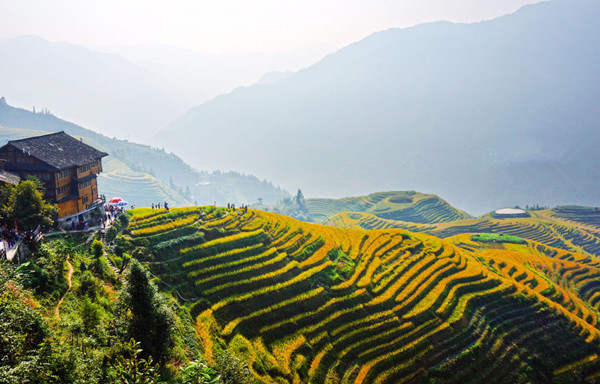
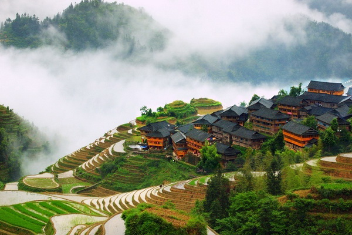
寻找20元人民币的背面——桂林漓江画中游
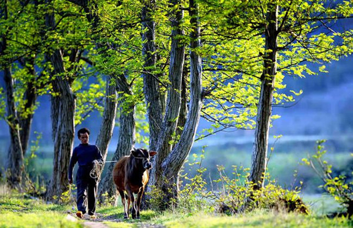
邂逅最美时光——山水遇龙骑行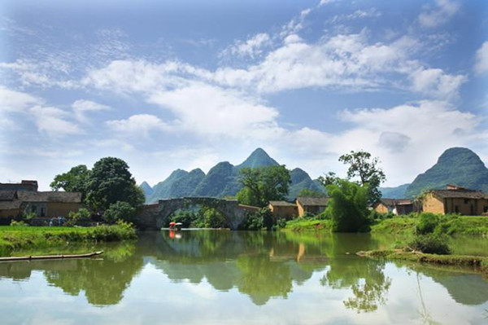

DAY1：各地————桂林
根据航班信息，，机场接机，入住：桂林大公馆
若时间还早，可以去看一看桂林地标象鼻山，桂林的其他景点还有伏波山，桂林博物馆，七星公园。
夜幕降临，集体晚餐后可自行逛逛桂林最繁华的十字街，有着各种各样的美食与小玩意，也可以选择去夜游两江西湖，一赏桂林迷人夜景。
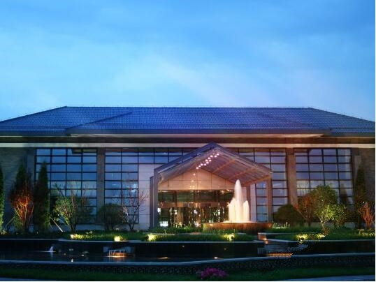
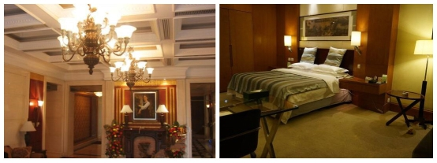
有多余的时间，可安排晋祠游玩
晋祠，原为晋王祠（唐叔虞祠），为纪念晋（汾）王及母后邑姜而兴建。依山傍水，风景秀丽。以其雄伟的建筑群、高超的塑像艺术闻名于世。是集中国古代祭祀建筑、园林、雕塑、壁画、碑刻艺术为一体的唯一而珍贵的历史文化遗产，也是世界建筑、园林、雕刻艺术中心。其中，难老泉、侍女像、圣母像被誉为“晋祠三绝”。
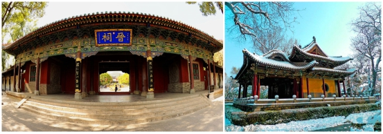
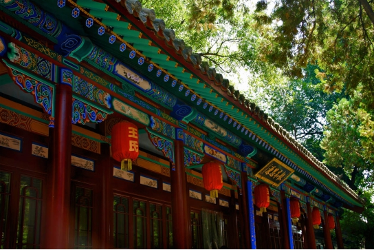
晚上一起当地菜晚餐，队员们谈笑风生。
DAY2:太原——太岳山国际狩猎场——灵石
07:30 早起，享用酒店精美自助早餐
08:30 前往太岳山东方国际狩猎场，路上领队讲解行程安排，队员自我介绍，破冰游戏！（车程约2小时）
10:30 抵达霍州狩猎场，会议室讲解机械安全知识，由狩猎场猎人配发枪支、培训打靶，打靶活动中，由狩猎场猎人进行野外生存实战指导，狩猎区动物的活动规律特点进行讲解。
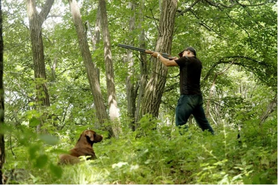
12:00 午餐，农家炒菜
13:30 由狩猎场猎人分组带领进山狩猎 (目标动物野鸡、野兔等)
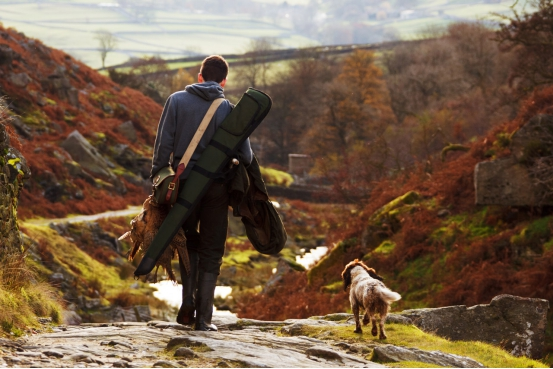
16:30 围猎结束返回，收货的猎物可带回由厨房代加工18:00 晚餐，铁锅炖野味
19:00 离开狩猎场，下一站，前往灵石崇宁堡温泉酒店入住
酒店外观是独特的古堡型，极富历史感；当中有独特的四合院落，可以给你带来新奇的入住体验，感受古院落文化带来的无穷魅力。
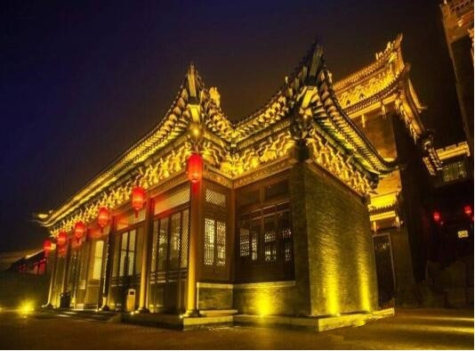
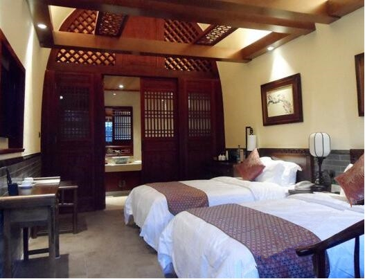
DAY3：灵石——三清寨徒步
07:30 起床，享用酒店精美自助早餐
08:30 集合上车，前往徒步起点（车程约30分钟）
09:00 跟随领队热身操后出发，徒步路线：灵石撅撅崖-乔麦庄--幸福疙瘩--三清寨（徒步里程约15KM），中午在途中路餐。
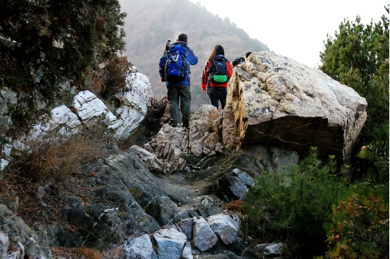
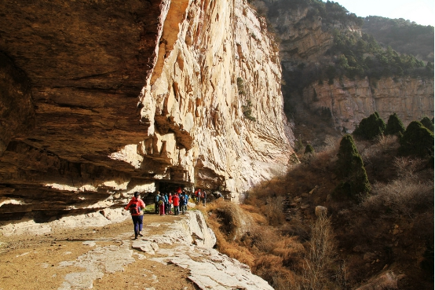
三清寨，草丛树木都生长在石缝中或沙土上。奇石、怪石、美石、丑石随处可见。数百吨重的巨大石头或悬在山腰，险如天外来客形态万千，仿佛等待游人冠以雅名；或横在羊肠小道，似疾驶的列车从远古驶向文明。小石玲珑剔透，有的似汉白玉，洁白无瑕；有的如七彩石，色彩斑斓。
16:30 全体队员徒步完毕，终点集合，发车返回酒店
18:30 晚餐后沐浴温泉，缓解徒步的疲惫
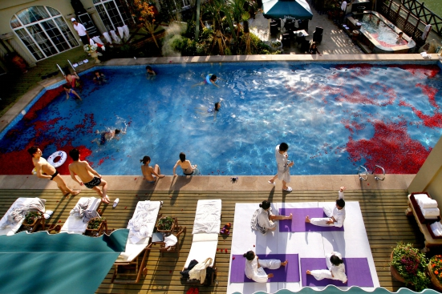
DAY4：灵石——王家大院——平遥古镇
08:00 今天行程比较轻松，可以稍晚些起床，享用酒店自助早餐
09:00 游览王家大院，就在酒店附近
王家大院是静升王氏家族于明清两朝、经300余年修建的一组大型建筑群，总面积25万平方米，现已开放的三座城堡依山而建，层楼叠院，气势雄宏，结构奇巧，院内的砖、木、石“三雕”装饰品随处可见，内容丰富，雕艺精湛，堪称一绝。王家大院自开放以来受到国内外游人的一致好评，被称为“华夏民居第一宅”、“山西的紫禁城”和“中国的民间故宫”。
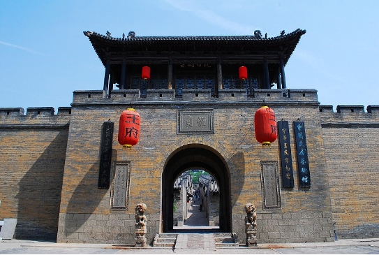
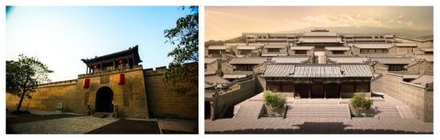
12:00 中餐
13：30 集合上车，一下站平遥古城(约1小时车程)
14：00 游览平遥，漫步古城老巷，找寻城中往事。
巍峨的古老城垣厚重深沉，古城内的街道、店铺和民居依旧保持着传统的布局和风貌，浓郁的晋商文化气息，淳朴的晋中民风，平遥散发着安静而内敛的悠久气质。
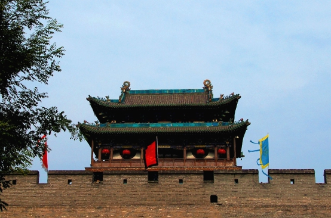
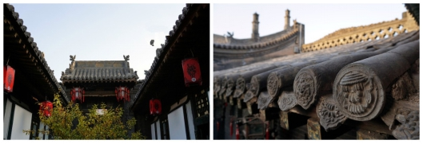
17:30 前往平遥古镇入住平遥会馆办理入住
★平遥会馆位于古城四大街之一城隍庙街繁华地段，集旅游休闲、食宿、演艺、商务于一体，令您惊喜感受当年晋商生活的典雅与奢华。
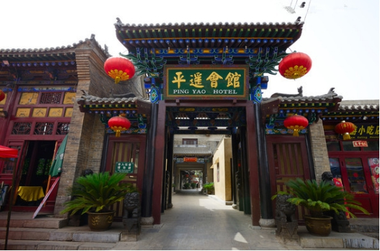
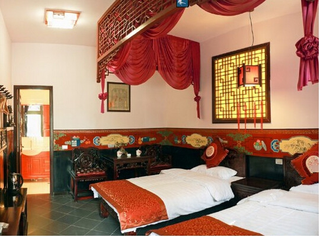
通票可浏览全部19个景点可用2天。但是在第1天需持票到小十字、县衙、北门售票处办手续，避免买第二次票。
DAY5：返程
全天返程日，若航班时间较晚，可以选择在平遥古城继续游玩，从平遥至太原机场约1.5小时车程

【所需装备】
1、鞋，穿舒适防滑的户外运动鞋、徒步鞋、登山鞋，户外运动时切忌不能穿皮鞋、高跟鞋徒步。
2、衣物，冲锋衣裤（尽量避免穿着牛仔裤）、保暖衣物（抓肉衣裤、羽绒服等）、速干衣裤、手套、徒步袜子
3、背包，双肩超轻户外速干包（容量20L以下）
4、手杖，超轻登山手杖，最好使用双杖
5、药物，个人使用晕车药/晕车贴，个人所需药品等
6、水壶，1L以上
7、防晒物品，遮阳帽、魔术方巾、太阳镜、防晒霜、润唇膏等
8、防护用品，慎用护膝护腕！影响皮肤散热、影响血液循环
9、干粮，徒步中路餐需要大家自备干粮，内容建议是压缩饼干、牛肉干、士力架、火腿肠这类热量高切不占空间与重量的食物
10、其他可能需要物品，身份证、手机、相机、少量现金、雨具、环保垃圾袋等 【出行守则】
1，健康提醒：根据活动的难易程度，评估您是否适合参加户外运动。
2，安全原则：户外活动中听从领队指挥。正确使用户外用具及防护用具。
3，适合年龄: 7周岁-60周岁 ，如有携带年龄不符合的成员，请慎重参加户外活动
4，强调团队精神，互帮互助，女士优先原则，严禁个人英雄主义
5，自备及租用物品由各人自行背负；公用物品由每位团员分担背负
6，如发生堵车、抛锚、迷路，台风及其他等不可控制的意外情况，请大家谅解，并能协助领队一起解决
7，爱护环境，注意环保，森林中严禁明火，全部垃圾带出景区，野外如厕远离水源
【费用说明】
1、网站价格根据活动标配计算，具体将根据您的定制要求（如人数、餐饮、住宿、出行时间等）作对应调整，此线路报价不含大交通（飞机，火车等）费用
2、用餐均以桌数为单位计算
3、团队活动统一购买户外运动高风险意外险
【不可抗力】
1、雨天备案 ：提前三天根据天气预报，在不影响行程的前提下做雨天备案。
2、行程改期 ：由于客户自身原因造成的行程改期，所产生的违约金由客户方承担。
【徒步小贴士】
① 匀速行走，在平地和下坡路时候匀速可以减轻很多体力，靠惯性的力量带动身体的起伏。
② 呼吸均匀，鼻吸嘴呼，短吸长呼，身体不适时保持深呼吸。
③ 及时补水，小口慢咽。
④ 注意下坡路，身体微侧行走，保护膝盖。
⑤ 不饮用途中经过的山泉水。
⑥ 行走时不打闹不玩耍不拍照，目视前方。
⑦ 善于使用手杖，可以节省很多力气。
⑧ 减少坐下来休息的次数，可站着依靠大树等支撑休息。每行走45分钟休息10分钟。
⑨ 徒步后需要休息45分钟方可进食。
1、鞋，穿舒适防滑的户外运动鞋、徒步鞋、登山鞋，户外运动时切忌不能穿皮鞋、高跟鞋徒步。
2、衣物，冲锋衣裤（尽量避免穿着牛仔裤）、保暖衣物（抓肉衣裤、羽绒服等）、速干衣裤、手套、徒步袜子
3、背包，双肩超轻户外速干包（容量20L以下）
4、手杖，超轻登山手杖，最好使用双杖
5、药物，个人使用晕车药/晕车贴，个人所需药品等
6、水壶，1L以上
7、防晒物品，遮阳帽、魔术方巾、太阳镜、防晒霜、润唇膏等
8、防护用品，慎用护膝护腕！影响皮肤散热、影响血液循环
9、干粮，徒步中路餐需要大家自备干粮，内容建议是压缩饼干、牛肉干、士力架、火腿肠这类热量高切不占空间与重量的食物
10、其他可能需要物品，身份证、手机、相机、少量现金、雨具、环保垃圾袋等 【出行守则】
1，健康提醒：根据活动的难易程度，评估您是否适合参加户外运动。
2，安全原则：户外活动中听从领队指挥。正确使用户外用具及防护用具。
3，适合年龄: 7周岁-60周岁 ，如有携带年龄不符合的成员，请慎重参加户外活动
4，强调团队精神，互帮互助，女士优先原则，严禁个人英雄主义
5，自备及租用物品由各人自行背负；公用物品由每位团员分担背负
6，如发生堵车、抛锚、迷路，台风及其他等不可控制的意外情况，请大家谅解，并能协助领队一起解决
7，爱护环境，注意环保，森林中严禁明火，全部垃圾带出景区，野外如厕远离水源
【费用说明】
1、网站价格根据活动标配计算，具体将根据您的定制要求（如人数、餐饮、住宿、出行时间等）作对应调整，此线路报价不含大交通（飞机，火车等）费用
2、用餐均以桌数为单位计算
3、团队活动统一购买户外运动高风险意外险
【不可抗力】
1、雨天备案 ：提前三天根据天气预报，在不影响行程的前提下做雨天备案。
2、行程改期 ：由于客户自身原因造成的行程改期，所产生的违约金由客户方承担。
【徒步小贴士】
① 匀速行走，在平地和下坡路时候匀速可以减轻很多体力，靠惯性的力量带动身体的起伏。
② 呼吸均匀，鼻吸嘴呼，短吸长呼，身体不适时保持深呼吸。
③ 及时补水，小口慢咽。
④ 注意下坡路，身体微侧行走，保护膝盖。
⑤ 不饮用途中经过的山泉水。
⑥ 行走时不打闹不玩耍不拍照，目视前方。
⑦ 善于使用手杖，可以节省很多力气。
⑧ 减少坐下来休息的次数，可站着依靠大树等支撑休息。每行走45分钟休息10分钟。
⑨ 徒步后需要休息45分钟方可进食。